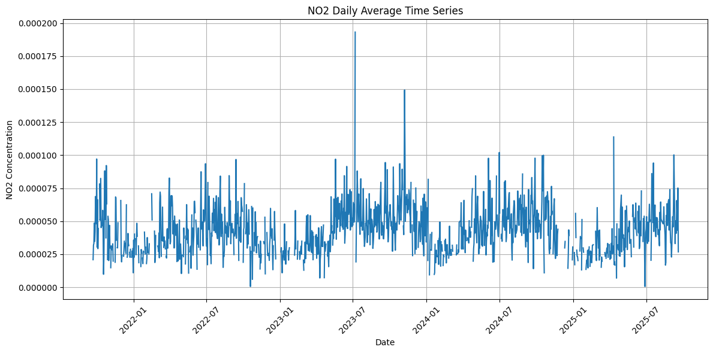
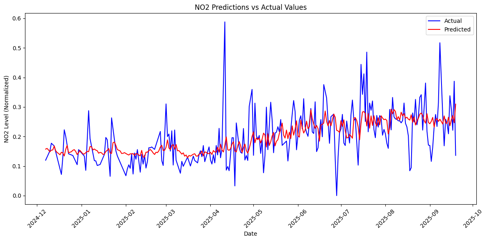

Forecasting \(NO_2\) dengan 30 Hari (14 Lags)#
Agregat Data \(NO_2\) Harian#
import pandas as pd
# ====== Konfigurasi file ======
input_path = "dataset/no2_gresik_day.csv" # ganti dengan path CSV Anda
output_path = "dataset/data.csv" # file keluaran
# ====== Baca data ======
# parse kolom t sebagai tanggal (YYYY-MM-DD)
df = pd.read_csv(input_path, parse_dates=['t'])
# ====== Hapus kolom yang tidak diperlukan ======
cols_drop = [c for c in ['x', 'y', 'crs'] if c in df.columns]
df = df.drop(columns=cols_drop)
# (opsional) pastikan hanya baris dengan nilai NO2 valid yang dipakai
# df = df.dropna(subset=['NO2'])
# ====== Hitung rata-rata NO2 per hari ======
# Jika 't' berformat tanggal penuh dan Anda HANYA ingin bagian harinya:
df['t'] = df['t'].dt.date # ubah ke tipe date (tanpa jam)
no2_harian = (
df.groupby('t', as_index=False)['NO2']
.mean()
.rename(columns={'NO2': 'NO2_mean'})
)
# ====== Simpan hasil ======
no2_harian.to_csv(output_path, index=False)
print("Contoh 5 baris teratas:")
print(no2_harian.head())
print(f"\nDisimpan ke: {output_path}")
Contoh 5 baris teratas:
t NO2_mean
0 2021-09-20 0.000055
1 2021-09-21 NaN
2 2021-09-22 0.000021
3 2021-09-23 0.000032
4 2021-09-24 0.000033
Disimpan ke: dataset/data.csv
Grafik Data Time Series Harian (Sebelum Interpolasi Linear)#
import matplotlib.pyplot as plt
plt.figure(figsize=(12, 6))
plt.plot(no2_harian['t'], no2_harian['NO2_mean'])
plt.title('NO2 Daily Average Time Series')
plt.xlabel('Date')
plt.ylabel('NO2 Concentration')
plt.grid(True)
plt.xticks(rotation=45)
plt.tight_layout()
plt.show()

Terlihat di beberapa tanggal banyak data kosong yang tidak ada nilainya
Penanganan Missing Value dengan Interpolasi Linear#
import pandas as pd
# 1) Pastikan kolom t jadi datetime & urut
tmp = no2_harian.copy()
tmp['t'] = pd.to_datetime(tmp['t'])
tmp = tmp.sort_values('t')
# 2) Buat deret tanggal harian kontinu
full_idx = pd.date_range(tmp['t'].min(), tmp['t'].max(), freq='D')
tmp = tmp.set_index('t').reindex(full_idx)
tmp.index.name = 't'
# 3) Interpolasi linear berbasis waktu
tmp['NO2_mean'] = tmp['NO2_mean'].interpolate(method='time')
# 4) Tutup sisa NaN di tepi (awal/akhir) bila ada
tmp['NO2_mean'] = tmp['NO2_mean'].bfill().ffill()
# 5) Kembalikan ke dataframe final (index → kolom t bertipe date opsional)
no2_harian_filled = tmp.reset_index().rename(columns={'index': 't'})
no2_harian_filled['t'] = no2_harian_filled['t'].dt.date # opsional: jadikan date murni
# Cek
print(no2_harian_filled.head())
t NO2_mean
0 2021-09-20 0.000055
1 2021-09-21 0.000038
2 2021-09-22 0.000021
3 2021-09-23 0.000032
4 2021-09-24 0.000033
Mengatasi data Outlier#
# Import necessary library
from sklearn.preprocessing import RobustScaler
print("Before outlier treatment:")
print(f"Number of rows: {len(no2_harian_filled)}")
print(f"NO2 range: [{no2_harian_filled['NO2_mean'].min():.2f}, {no2_harian_filled['NO2_mean'].max():.2f}]")
# Apply RobustScaler which is robust to outliers
robust_scaler = RobustScaler()
no2_harian_filled['NO2_mean'] = robust_scaler.fit_transform(no2_harian_filled[['NO2_mean']]) * \
no2_harian_filled['NO2_mean'].std() + \
no2_harian_filled['NO2_mean'].mean()
print("\nAfter outlier treatment:")
print(f"Number of rows: {len(no2_harian_filled)}")
print(f"NO2 range: [{no2_harian_filled['NO2_mean'].min():.2f}, {no2_harian_filled['NO2_mean'].max():.2f}]")
Before outlier treatment:
Number of rows: 1461
NO2 range: [0.00, 0.00]
After outlier treatment:
Number of rows: 1461
NO2 range: [0.00, 0.00]
Grafik data Time Series (Setelah Interpolasi Linear)#
plt.figure(figsize=(12, 6))
plt.plot(no2_harian_filled['t'], no2_harian_filled['NO2_mean'])
plt.title('NO2 Daily Average Time Series')
plt.xlabel('Date')
plt.ylabel('NO2 Concentration')
plt.grid(True)
plt.xticks(rotation=45)
plt.tight_layout()
plt.show()
Mengubah menjadi data Superviesd#
def make_supervised_lag(df_daily):
df = df_daily.copy()
# Pastikan tipe datetime & urut
df['t'] = pd.to_datetime(df['t'])
df = df.sort_values('t')
# Normalisasi nama kolom nilai → 'NO_2'
if 'NO2_mean' in df.columns:
df = df.rename(columns={'NO2_mean': 'NO_2'})
elif 'NO2' in df.columns:
df = df.rename(columns={'NO2': 'NO_2'})
else:
raise ValueError("Dataframe harus memiliki kolom 'NO2' atau 'NO2_mean'.")
# Buat kolom lag (h-1 sampai h-30) berbasis waktu harian
lag_columns = []
for i in range(1, 30+1):
col_name = f'h-{i}'
df[col_name] = df['NO_2'].shift(i)
lag_columns.append(col_name)
# Buang baris awal yang belum punya lag lengkap
df = df.dropna(subset=lag_columns).reset_index(drop=True)
# Kembalikan ke date saja untuk kolom t
df['t'] = df['t'].dt.date
return df
# Pakai fungsi:
df = make_supervised_lag(no2_harian_filled)
print("Shape dataframe:", df.shape)
print("\nDaftar kolom:")
print(df.columns.tolist())
print("\nContoh 5 baris pertama:")
print(df.head())
Shape dataframe: (1431, 32)
Daftar kolom:
['t', 'NO_2', 'h-1', 'h-2', 'h-3', 'h-4', 'h-5', 'h-6', 'h-7', 'h-8', 'h-9', 'h-10', 'h-11', 'h-12', 'h-13', 'h-14', 'h-15', 'h-16', 'h-17', 'h-18', 'h-19', 'h-20', 'h-21', 'h-22', 'h-23', 'h-24', 'h-25', 'h-26', 'h-27', 'h-28', 'h-29', 'h-30']
Contoh 5 baris pertama:
t NO_2 h-1 h-2 h-3 h-4 h-5 \
0 2021-10-20 0.000060 0.000030 0.000019 0.000043 0.000056 0.000049
1 2021-10-21 0.000079 0.000060 0.000030 0.000019 0.000043 0.000056
2 2021-10-22 0.000051 0.000079 0.000060 0.000030 0.000019 0.000043
3 2021-10-23 0.000046 0.000051 0.000079 0.000060 0.000030 0.000019
4 2021-10-24 0.000040 0.000046 0.000051 0.000079 0.000060 0.000030
h-6 h-7 h-8 ... h-21 h-22 h-23 h-24 \
0 0.000047 0.000048 0.000046 ... 0.000056 0.000064 0.000044 0.000038
1 0.000049 0.000047 0.000048 ... 0.000048 0.000056 0.000064 0.000044
2 0.000056 0.000049 0.000047 ... 0.000086 0.000048 0.000056 0.000064
3 0.000043 0.000056 0.000049 ... 0.000035 0.000086 0.000048 0.000056
4 0.000019 0.000043 0.000056 ... 0.000063 0.000035 0.000086 0.000048
h-25 h-26 h-27 h-28 h-29 h-30
0 0.000049 0.000037 0.000036 0.000027 0.000041 0.000054
1 0.000038 0.000049 0.000037 0.000036 0.000027 0.000041
2 0.000044 0.000038 0.000049 0.000037 0.000036 0.000027
3 0.000064 0.000044 0.000038 0.000049 0.000037 0.000036
4 0.000056 0.000064 0.000044 0.000038 0.000049 0.000037
[5 rows x 32 columns]
Merubah data time series dengan target \(NO_2\), menjadi data dengan 3 fitur tambahan.
Data fitur tambahan dihasilkan dari 3 data hari sebelumnya.
Contoh : Untuk data target tanggal 23 September 2021, menggunakan data \(NO_2\) saat tanggal 22, 21, dan 20 September, dan seterusnya.
Seleksi Fitur Auto Correlation#
# Ambil semua kolom lag yang ada di df
lag_cols = [c for c in df.columns if c.startswith('h-')]
print("Kolom lag yang tersedia:", lag_cols)
corr_signed = df[lag_cols + ['NO_2']].corr()['NO_2'].drop('NO_2')
# Create correlation table
corr_table = pd.DataFrame({
'Nama Fitur': lag_cols,
'Nilai Korelasi': corr_signed.values
}).sort_values('Nilai Korelasi', ascending=False)
# Format table display
pd.set_option('display.float_format', lambda x: '%.6f' % x)
# Display the formatted table
print("Tabel Autokorelasi dengan Target NO_2:")
print("=====================================")
print(corr_table.to_string(index=False))
Kolom lag yang tersedia: ['h-1', 'h-2', 'h-3', 'h-4', 'h-5', 'h-6', 'h-7', 'h-8', 'h-9', 'h-10', 'h-11', 'h-12', 'h-13', 'h-14', 'h-15', 'h-16', 'h-17', 'h-18', 'h-19', 'h-20', 'h-21', 'h-22', 'h-23', 'h-24', 'h-25', 'h-26', 'h-27', 'h-28', 'h-29', 'h-30']
Tabel Autokorelasi dengan Target NO_2:
=====================================
Nama Fitur Nilai Korelasi
h-1 0.543573
h-5 0.351518
h-6 0.338853
h-2 0.335974
h-11 0.334643
h-10 0.329171
h-21 0.323407
h-4 0.320462
h-8 0.306747
h-9 0.306632
h-22 0.305773
h-7 0.304302
h-16 0.302203
h-28 0.301058
h-27 0.299811
h-14 0.299437
h-3 0.297925
h-13 0.295412
h-18 0.290909
h-12 0.288649
h-20 0.279153
h-19 0.270082
h-15 0.269683
h-17 0.267475
h-23 0.246546
h-29 0.244942
h-24 0.223412
h-26 0.222270
h-25 0.208490
h-30 0.206968
# Filter features with correlation > 0.3
selected_feats = corr_table[corr_table['Nilai Korelasi'] > 0.3]['Nama Fitur'].tolist()
print("Features with correlation > 0.3:")
print("\nSelected features:", selected_feats)
print("\nNumber of selected features:", len(selected_feats))
# Pastikan hanya memilih kolom yang ada di df
selected_feats_valid = [f for f in selected_feats if f in df.columns]
print("\nSelected features (valid):", selected_feats_valid)
print("\nNumber of valid selected features:", len(selected_feats_valid))
selected_feats_valid = selected_feats_valid[::-1]
df = df[['t'] + selected_feats_valid + ['NO_2']]
df.head()
Features with correlation > 0.3:
Selected features: ['h-1', 'h-5', 'h-6', 'h-2', 'h-11', 'h-10', 'h-21', 'h-4', 'h-8', 'h-9', 'h-22', 'h-7', 'h-16', 'h-28']
Number of selected features: 14
Selected features (valid): ['h-1', 'h-5', 'h-6', 'h-2', 'h-11', 'h-10', 'h-21', 'h-4', 'h-8', 'h-9', 'h-22', 'h-7', 'h-16', 'h-28']
Number of valid selected features: 14
| t | h-28 | h-16 | h-7 | h-22 | h-9 | h-8 | h-4 | h-21 | h-10 | h-11 | h-2 | h-6 | h-5 | h-1 | NO_2 | |
|---|---|---|---|---|---|---|---|---|---|---|---|---|---|---|---|---|
| 0 | 2021-10-20 | 0.000027 | 0.000034 | 0.000048 | 0.000064 | 0.000075 | 0.000046 | 0.000056 | 0.000056 | 0.000052 | 0.000050 | 0.000019 | 0.000047 | 0.000049 | 0.000030 | 0.000060 |
| 1 | 2021-10-21 | 0.000036 | 0.000046 | 0.000047 | 0.000056 | 0.000046 | 0.000048 | 0.000043 | 0.000048 | 0.000075 | 0.000052 | 0.000030 | 0.000049 | 0.000056 | 0.000060 | 0.000079 |
| 2 | 2021-10-22 | 0.000037 | 0.000054 | 0.000049 | 0.000048 | 0.000048 | 0.000047 | 0.000019 | 0.000086 | 0.000046 | 0.000075 | 0.000060 | 0.000056 | 0.000043 | 0.000079 | 0.000051 |
| 3 | 2021-10-23 | 0.000049 | 0.000063 | 0.000056 | 0.000086 | 0.000047 | 0.000049 | 0.000030 | 0.000035 | 0.000048 | 0.000046 | 0.000079 | 0.000043 | 0.000019 | 0.000051 | 0.000046 |
| 4 | 2021-10-24 | 0.000038 | 0.000072 | 0.000043 | 0.000035 | 0.000049 | 0.000056 | 0.000060 | 0.000063 | 0.000047 | 0.000048 | 0.000051 | 0.000019 | 0.000030 | 0.000046 | 0.000040 |
Scalling Min-Max Normalization#
from sklearn.preprocessing import MinMaxScaler
scaler = MinMaxScaler(feature_range=(0,1))
# Menyimpan data ori 14 Lags ke file
df_ori14lags = df.copy()
df.to_csv('dataset/dataOri14Lags', index=False)
cols_to_scale = [c for c in df.columns if c != 't']
df_scaled = df.copy()
df_scaled[cols_to_scale] = scaler.fit_transform(df_scaled[cols_to_scale])
df_scaled.head()
df = df_scaled.copy()
# Menyimpan data ori 14 Lags ke file
df.to_csv('dataset/data14LagsNorm.csv',index=False)
Kode tersebut membuat MinMaxScaler(0–1) lalu menerapkannya ke semua kolom kecuali t, sehingga setiap kolom numerik dipetakan ke rentang ([0,1]). Hasilnya disalin ke df_scaled, kemudian disalin kembali ke df dan disimpan sebagai CSV di dataset/data14LagsNorm.csv tanpa indeks. Singkatnya: normalisasi fitur → pratinjau (head()) → simpan dataset yang sudah diskalakan.
df_ori14lags.head()
| t | h-28 | h-16 | h-7 | h-22 | h-9 | h-8 | h-4 | h-21 | h-10 | h-11 | h-2 | h-6 | h-5 | h-1 | NO_2 | |
|---|---|---|---|---|---|---|---|---|---|---|---|---|---|---|---|---|
| 0 | 2021-10-20 | 0.000027 | 0.000034 | 0.000048 | 0.000064 | 0.000075 | 0.000046 | 0.000056 | 0.000056 | 0.000052 | 0.000050 | 0.000019 | 0.000047 | 0.000049 | 0.000030 | 0.000060 |
| 1 | 2021-10-21 | 0.000036 | 0.000046 | 0.000047 | 0.000056 | 0.000046 | 0.000048 | 0.000043 | 0.000048 | 0.000075 | 0.000052 | 0.000030 | 0.000049 | 0.000056 | 0.000060 | 0.000079 |
| 2 | 2021-10-22 | 0.000037 | 0.000054 | 0.000049 | 0.000048 | 0.000048 | 0.000047 | 0.000019 | 0.000086 | 0.000046 | 0.000075 | 0.000060 | 0.000056 | 0.000043 | 0.000079 | 0.000051 |
| 3 | 2021-10-23 | 0.000049 | 0.000063 | 0.000056 | 0.000086 | 0.000047 | 0.000049 | 0.000030 | 0.000035 | 0.000048 | 0.000046 | 0.000079 | 0.000043 | 0.000019 | 0.000051 | 0.000046 |
| 4 | 2021-10-24 | 0.000038 | 0.000072 | 0.000043 | 0.000035 | 0.000049 | 0.000056 | 0.000060 | 0.000063 | 0.000047 | 0.000048 | 0.000051 | 0.000019 | 0.000030 | 0.000046 | 0.000040 |
Modeling 14 Lags#
Split dataset#
import pandas as pd
import numpy as np
from sklearn.model_selection import train_test_split
X = df[selected_feats_valid].copy()
y = df['NO_2'].copy()
tanggal = pd.to_datetime(df['t'])
X_train, X_test, y_train, y_test, t_train, t_test = train_test_split(X, y, tanggal, test_size=0.2, shuffle=False)
Modeling Data Training#
from sklearn.model_selection import TimeSeriesSplit, GridSearchCV
from sklearn.metrics import make_scorer
from sklearn.neighbors import KNeighborsRegressor
import numpy as np
# --- scorer: MAPE dengan epsilon agar stabil saat y≈0 ---
def mape_eps(y_true, y_pred, eps=1e-3):
return np.mean(np.abs((y_true - y_pred) / (np.abs(y_true) + eps))) * 100
mape_scorer = make_scorer(mape_eps, greater_is_better=False) # minimization
# --- CV khas time series (tanpa shuffle) ---
tscv = TimeSeriesSplit(n_splits=5)
# --- ruang hyperparameter ---
param_grid = {
"n_neighbors": [2, 3, 5, 7, 9, 11, 15, 21, 31],
"weights": ["distance", "uniform"],
"p": [1, 2], # 1=Manhattan, 2=Euclidean (masih metric='minkowski')
"algorithm": ["auto", "ball_tree", "kd_tree"],
"leaf_size": [15, 30, 45]
}
# --- grid search ---
knn_base = KNeighborsRegressor(metric="minkowski")
gsearch = GridSearchCV(
estimator=knn_base,
param_grid=param_grid,
scoring=mape_scorer, # pakai MAPE_eps
cv=tscv,
n_jobs=-1,
verbose=1
)
gsearch.fit(X_train, y_train)
# --- gunakan model terbaik untuk langkah berikutnya ---
knn = gsearch.best_estimator_
print("Best params:", gsearch.best_params_)
Fitting 5 folds for each of 324 candidates, totalling 1620 fits
Best params: {'algorithm': 'auto', 'leaf_size': 15, 'n_neighbors': 31, 'p': 1, 'weights': 'uniform'}
def convertToMikroGramperM3(value):
return (value * 46.006 * 10**3)
# Categorize NO2 level
def categorize_no2(value):
if value < 50:
return "Baik"
elif value < 100:
return "Sedang"
elif value < 200 :
return "Tidak Sehat"
elif value < 300:
return "Sangat Tidak Sehat"
else:
return "Berbahaya"
from sklearn.metrics import mean_squared_error, r2_score
import matplotlib.pyplot as plt
# Calculate predictions on test set
y_pred = knn.predict(X_test)
# Calculate MAPE
# Plot actual vs predicted values
plt.figure(figsize=(12, 6))
plt.plot(t_test, y_test, label='Actual', color='blue')
plt.plot(t_test, y_pred, label='Predicted', color='red')
plt.title('NO2 Predictions vs Actual Values')
plt.xlabel('Date')
plt.ylabel('NO2 Level (Normalized)')
plt.legend()
plt.xticks(rotation=45)
plt.tight_layout()
plt.show()
# Calculate modified MAPE avoiding division by zero
def modified_mape(y_true, y_pred):
mask = y_true != 0
return np.mean(np.abs((y_true[mask] - y_pred[mask]) / y_true[mask])) * 100
mape = modified_mape(y_test, y_pred)
print(f"Modified MAPE: {mape:.2f}%")
# Calculate other metrics
rmse = np.sqrt(mean_squared_error(y_test, y_pred))
r2 = r2_score(y_test, y_pred)
print(f"RMSE: {rmse:.6f}")
print(f"R2 Score: {r2:.6f}")
# Predict next day
last_row = X.iloc[-1:]
next_day_pred = knn.predict(last_row)
# Denormalize prediction
next_day_denorm = next_day_pred * scaler.data_range_[-1] + scaler.data_min_[-1]
print(f"\nPrediksi NO_2 untuk hari esok: {convertToMikroGramperM3(next_day_denorm[0])}")
category = categorize_no2(convertToMikroGramperM3(next_day_denorm[0]))
print(f"NO2 Level Category: {category}")

Modified MAPE: 29.10%
RMSE: 0.070682
R2 Score: 0.307824
Prediksi NO_2 untuk hari esok: 2.6603851932868174
NO2 Level Category: Baik